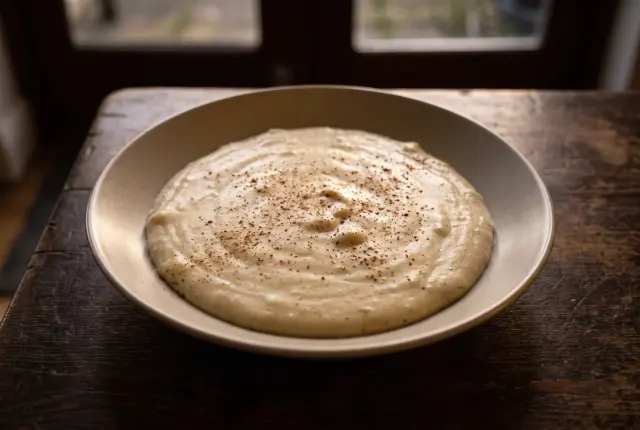
06:08
Bölüm 2 · Şefin El Kitabı
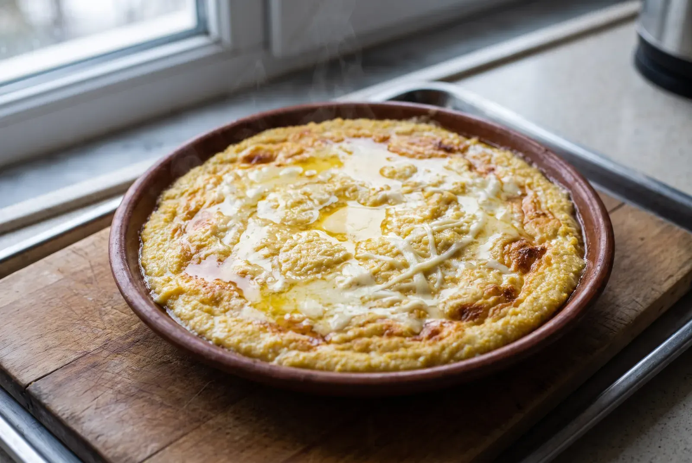
Görüntü temsilîdir · prototip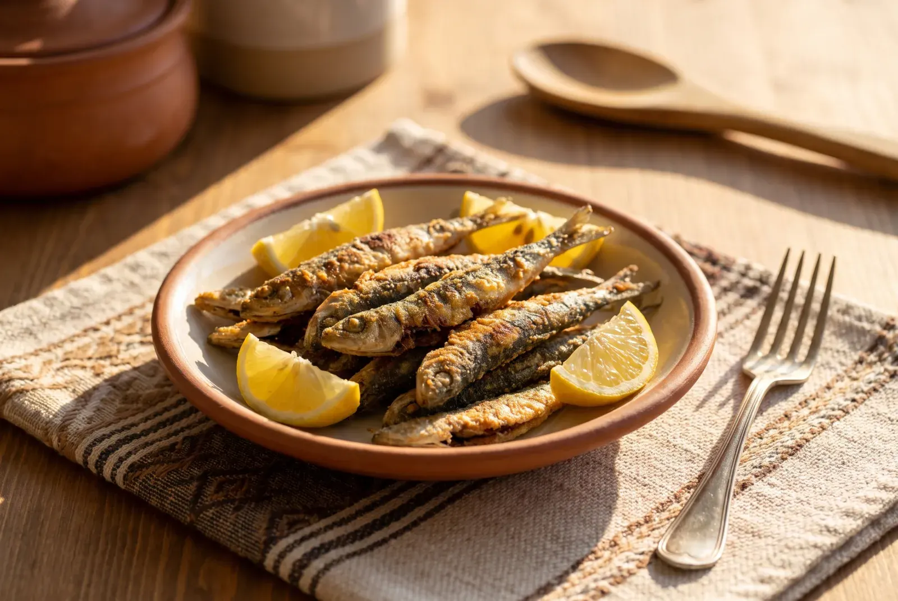
Görüntü temsilîdir · prototip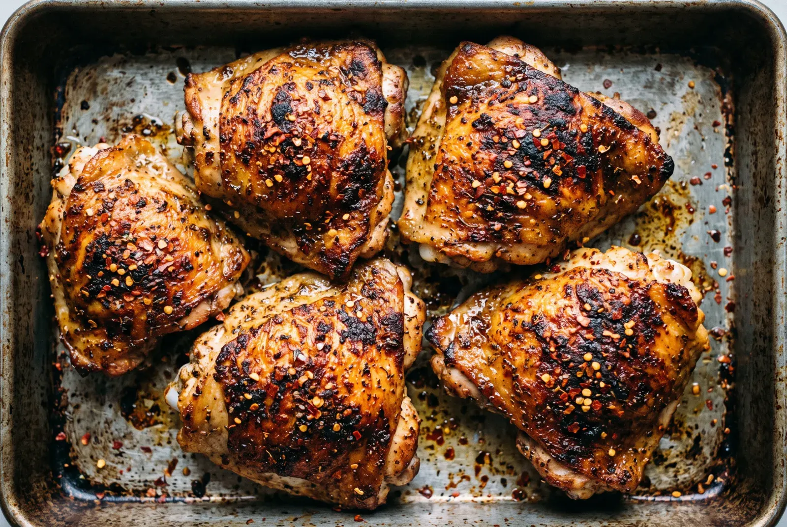
Görüntü temsilîdir · prototip26 video

 Pro · Bölüm 1
Pro · Bölüm 1

ASMR sesleri, mikro kesmeler, hızlı montaj ve anında uygulanabilir pratik püf noktaları. Dokun, tam ekranda yukarı kaydırarak sıradakine geç.
 30 sn
Kalan PilavlaKalan Pilavdan 30 Saniyede Çıtır Arancini
30 sn
Kalan PilavlaKalan Pilavdan 30 Saniyede Çıtır Arancini
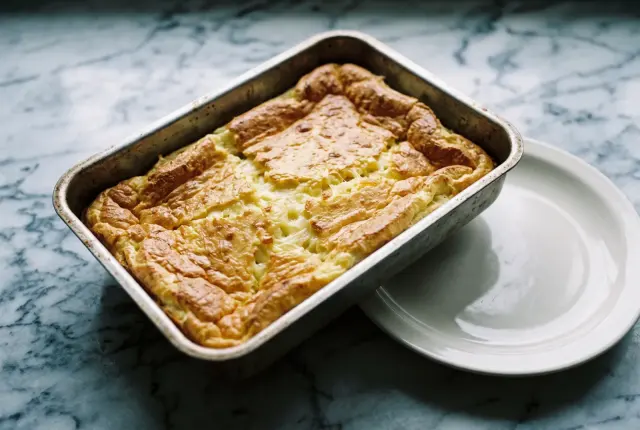
28 sn 3 Malzemeli3 Malzemeli Acil Durum Suflesi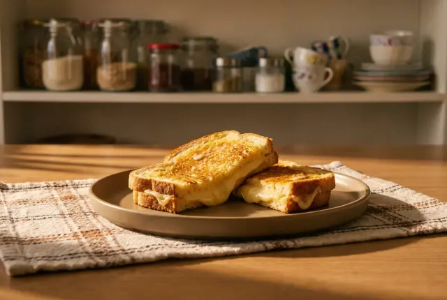
22 sn 3 MalzemeliTek TavaTavada Çıtır Kaşarlı Tost 19 sn Pişirmeden30 Saniyede Cacık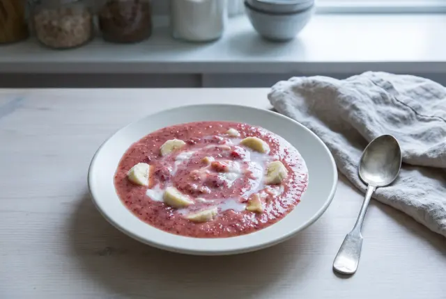
24 sn Pişirmeden5 DakikaÇilekli Muzlu Smoothie 35 sn
Tek TavaMıhlamada Peynirin Uzama Anı
41 sn
AirfryerAirfryer'da Mısır Usulü Patlıcan Salatası
35 sn
Tek TavaMıhlamada Peynirin Uzama Anı
41 sn
AirfryerAirfryer'da Mısır Usulü Patlıcan Salatası
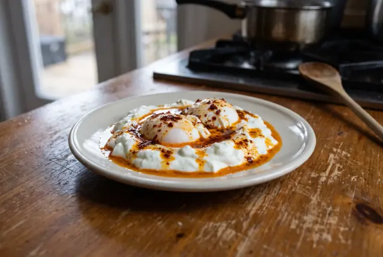
33 sn Tek TencereÇılbırda Poşe Yumurta Girdabı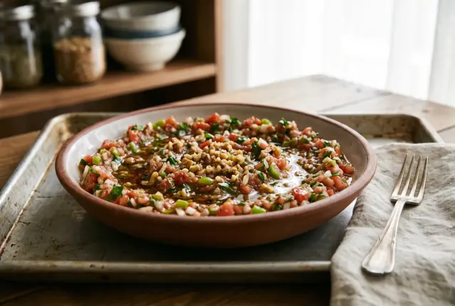
27 sn PişirmedenGavurdağı Usulü Acılı EzmeMinimum ekipman ve bulaşık; çalışanlara ve öğrencilere yönelik pratik, yüksek lezzetli kurtarıcı menüler. Sunan: Şahnur Sezek.
 Bölüm 1
Bölüm 1
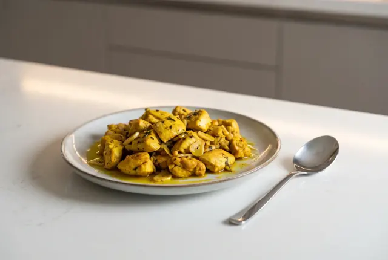
Bölüm 2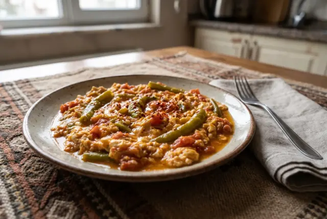
Bölüm 3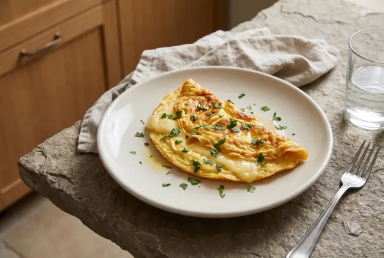
Bölüm 4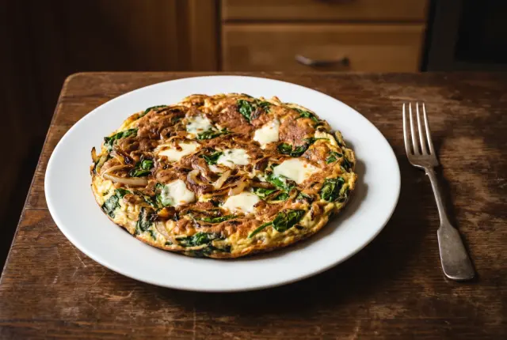
Bölüm 5Mutfak teknikleri, doğru bıçak kullanımı, emülsiyon sos bağlama ve profesyonel gastronomi sırları. Sunan: Canan Yücel.
 Bölüm 1
Bölüm 1
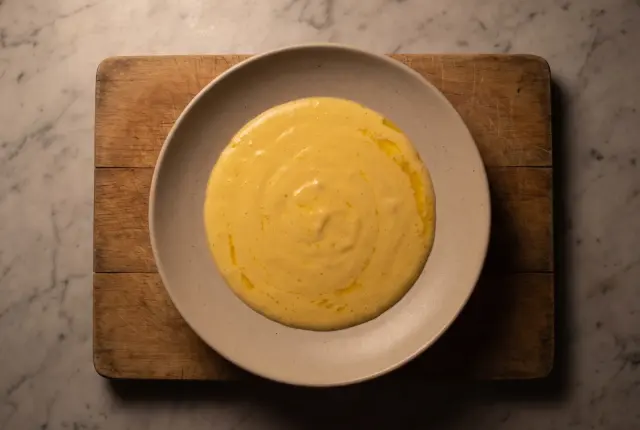
Bölüm 3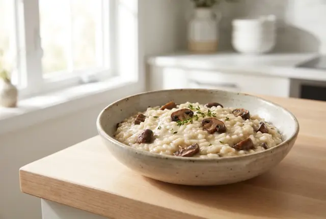
Bölüm 4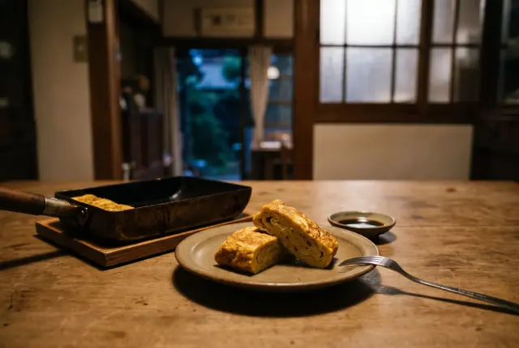
Bölüm 5Ünlü restoranların menülerinde yer alan kült reçetelerin ev ortamında birebir uygulanabilir formülleri. Sunan: Emel Aksu.
Pro · Bölüm 1
 Pro · Bölüm 2
Pro · Bölüm 2
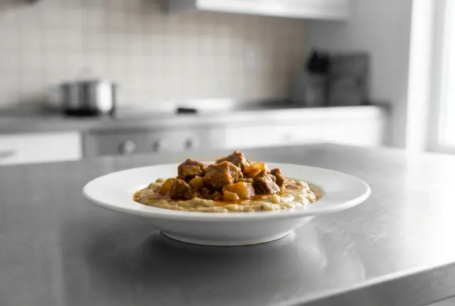
Pro · Bölüm 3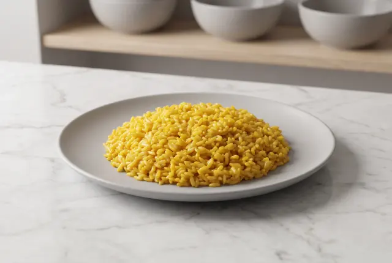
Pro · Bölüm 4 Pro · Bölüm 5
Pro · Bölüm 5
Coğrafi işaretli lezzetler, unutulmaya yüz tutmuş geleneksel Türk yemekleri ve yöresel malzeme hikâyeleri. Sunan: Berkan Güneş.
 Bölüm 1
Bölüm 2
Bölüm 3
Bölüm 1
Bölüm 2
Bölüm 3
 Bölüm 4
Bölüm 4
 Bölüm 5
Bölüm 5
Airfryer, döküm tava ve mutfak aletlerinin performans karşılaştırmaları; sponsorluğa hazır yapı. Sunan: Polat Abadan.
 Bölüm 1
Bölüm 3
Bölüm 1
Bölüm 3
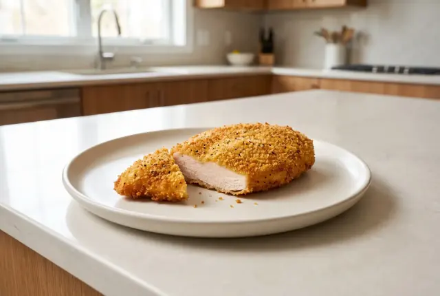
Bölüm 4 Bölüm 5
Bölüm 5
Her seriyi bir Dada Gastro şefi sunar; tarifleri sitede de yayında.

Bütün serilerin bölümleri bir arada. Aşağı kaydırdıkça yenileri yüklenir.
Süreyi genişletmeyi ya da başka bir konsept seçmeyi dene.
Süzgeçleri temizle
10 Dakikada MutfakBölüm 1
Şefin El KitabıBölüm 1
Pro · Bölüm 1
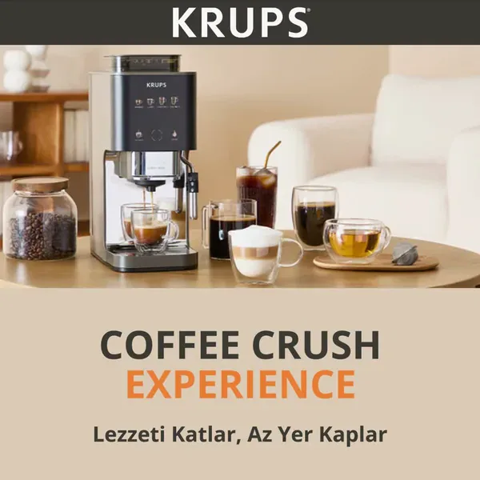
Kazan Kaynayan TopraklarBölüm 1
Akıllı Ekipman & TestBölüm 1
Pro · Bölüm 2
Kazan Kaynayan TopraklarBölüm 2
Kazan Kaynayan TopraklarBölüm 3
Akıllı Ekipman & TestBölüm 3
Kazan Kaynayan TopraklarBölüm 4
Pro · Bölüm 5
Kazan Kaynayan TopraklarBölüm 5
Akıllı Ekipman & TestBölüm 5
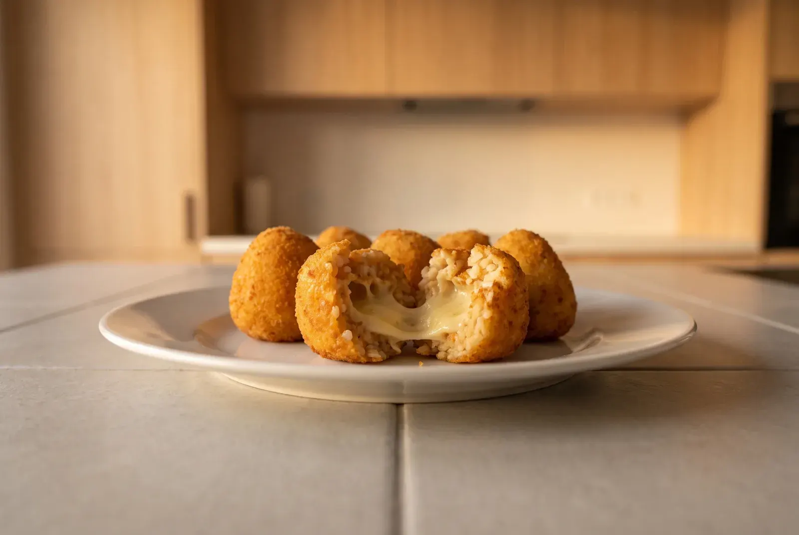
Görüntü temsilîdir · prototipDünden kalan pilav, ortasına bir küp peynir, galeta ve kızgın yağ.
Ece Özdenak · 30 Saniyede Tat · 30 sn
Yumurta, kaşar ve tereyağı: fincanda kabaran sufle.
Ece Özdenak · 30 Saniyede Tat · 28 sn
Tost makinesi yok mu? Kapaklı tava ve ağır bir tabakla.
Ece Özdenak · 30 Saniyede Tat · 22 sn
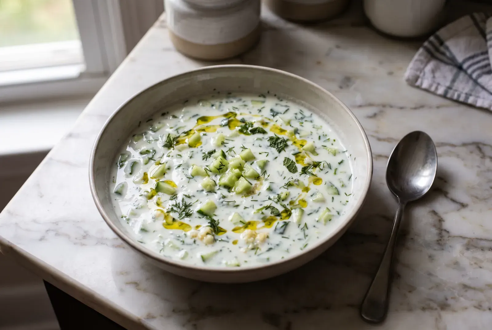
Görüntü temsilîdir · prototipRendelenmiş salatalığın suyunu sıkmak cacığı sulandırmaz.
Ece Özdenak · 30 Saniyede Tat · 19 sn
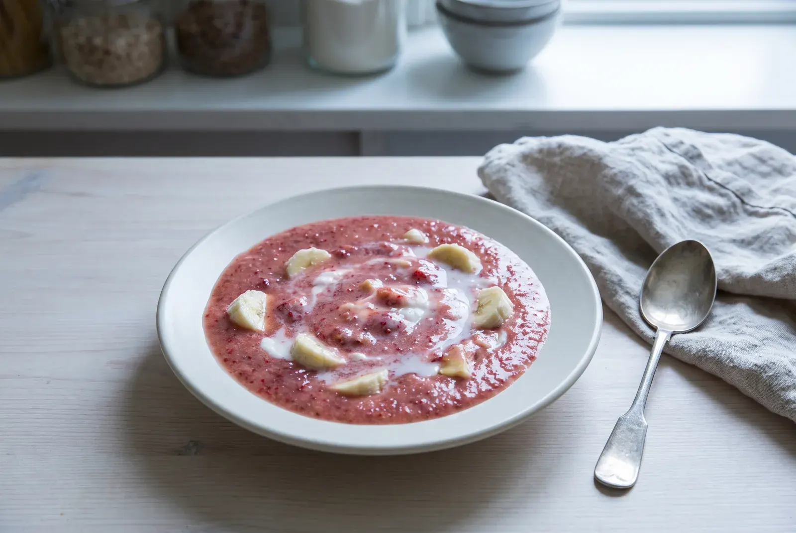
Görüntü temsilîdir · prototipDonuk muz buzun yerini tutar, kıvamı kaşıklık olur.
Ece Özdenak · 30 Saniyede Tat · 24 sn
 Görüntü temsilîdir · prototip
Görüntü temsilîdir · prototip
Peynir eriyince karıştırmayı bırak, tereyağı yüzeye çıksın.
Ece Özdenak · 30 Saniyede Tat · 35 sn
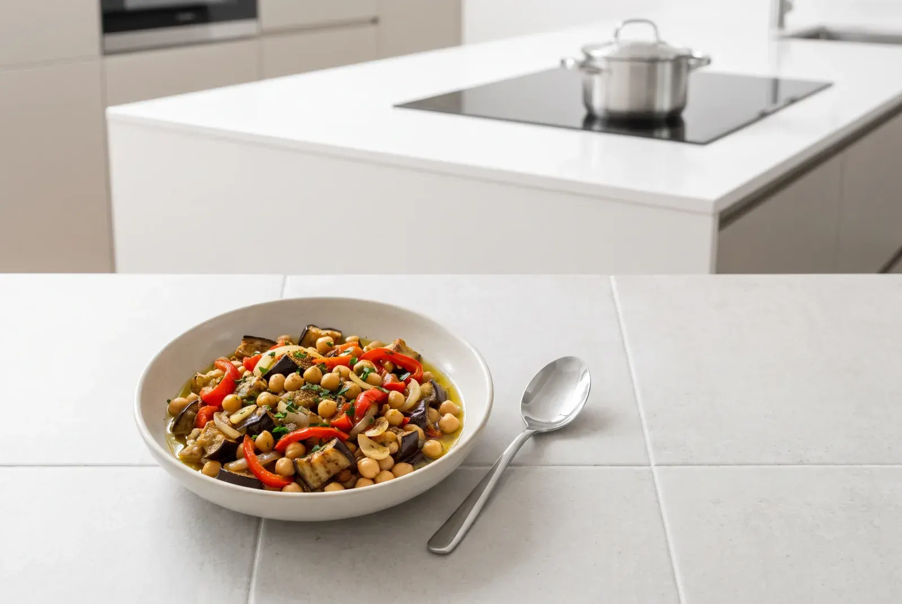
Görüntü temsilîdir · prototipKözleme yok, duman yok: airfryer'da kavrulan baharatlı patlıcan.
Ece Özdenak · 30 Saniyede Tat · 41 sn
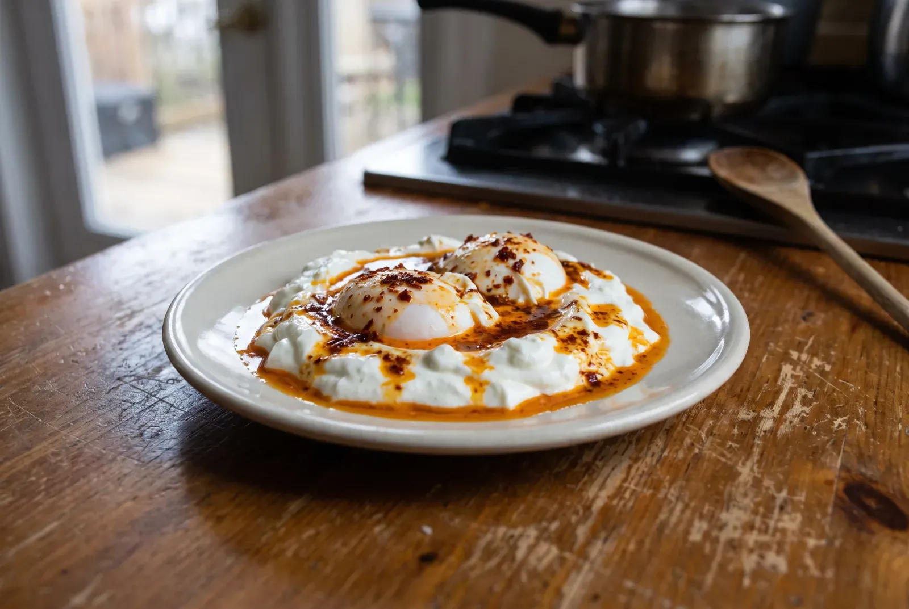
Görüntü temsilîdir · prototipKaynayan suya girdap, yumurta ortaya: 3 dakika.
Ece Özdenak · 30 Saniyede Tat · 33 sn
Bıçakla ince kıyım, nar ekşisi ve ceviz.
Ece Özdenak · 30 Saniyede Tat · 27 sn
Prototip sürümü: V1 · V2